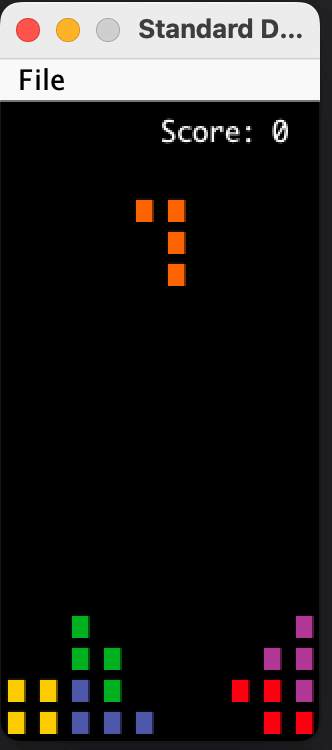

实验10：俄罗斯方块
常见问题
每个作业顶部都会链接一个常见问题。你也可以通过在 URL 末尾添加"/faq"来访问它。实验10的常见问题位于 这里 。
简介
本实验将帮助你开始项目的第二阶段：交互性。你不需要在做这个实验的时候就完成第一阶段。不过，如果你还没有开始，我们强烈建议你开始！
在本实验中，你应该思考一些想法（或实现！）如何应用到项目 3 中。它还将帮助你更熟悉项目所需的有用工具。
本实验有很多辅助方法——你不需要知道每个方法的作用，但请注意，在整个实验中你必须调用其中一些方法。你最终还会使用库中的方法。 请确保通读文件以了解你正在使用的内容！ 提醒一下，坐标 (0, 0) 代表板的左下角。
俄罗斯方块
为了准备制作你的游戏，我们将构建俄罗斯方块游戏！如果你不太熟悉俄罗斯方块，它是一款益智电子游戏，玩家需要在不同形状的方块（称为俄罗斯方块）生成并落到棋盘上时"完成"行。玩家可以根据需要移动和旋转这些方块来完成行——如果有任何行完成了，它们就会消失，玩家获得分数。当未消除的行到达棋盘顶部时，游戏结束。
你所有的实现都将在
俄罗斯方块.java
中。我们还提供了另外三个文件：
-
Tetromino.java：包含你将使用的板上方块 -
Movement.java：包含旋转和移动方块的逻辑 -
BagRandomizer.java：帮助随机化生成的方块
你不会直接在这三个文件中编写任何内容，但这些类会在
俄罗斯方块.java
中使用（或将会使用）。我们还将使用一个库
StdDraw
来帮助实现一些功能，比如用户输入。你会发现这个库对项目3非常有用。
虽然我们想要一个能正常运行的
俄罗斯方块.java
游戏，但我们应该把它分解成更小的步骤，而不是一下子全部解决。游戏可以大致分解为以下步骤：
- 创建游戏窗口。
- 随机生成一个玩家控制的方块，并显示当前分数。
- 根据玩家的输入更新方块的移动。
- 一旦方块无法再移动，检查是否有行需要消除，更新分数并重新生成一个新方块。
- 重复步骤 2-4，直到游戏结束（当未消除的行到达顶部时）。
一般来说，良好的编码实践是首先构建具有明确目的的小过程，然后使用基本方法组合更复杂的方法。如果你查看
俄罗斯方块.java
，你会注意到它包含许多辅助方法来帮助构建更复杂的游戏机制——将游戏逻辑分解为单独的方法对于项目3来说是非常推荐的。它会给你一个清晰的开发路径，并且更容易分解你的逻辑进行单元测试。
到实验结束时，你将拥有如下功能的东西：

如果你想自己玩这个游戏，你可以在 这里 找到它。
StdDraw
如前所述，我们将使用库
StdDraw
。
StdDraw
是一个提供的库，它提供了在程序中创建绘图以及获取用户输入的基本功能。请在开始之前查看
API
，因为你会发现一些方法不仅对本实验有用，对项目 3 也有用。
运行游戏
要运行游戏，请运行
俄罗斯方块.java
中的 main 方法。目前，这应该只会输出一个黑框。随着你实现更多方法，你可以使用这个方法来验证游戏逻辑的正确性。
方法概述
由于你所有的实现都将在
俄罗斯方块.java
中，所以你需要填写几个方法来让游戏运行起来。
如前所述，请务必通读
俄罗斯方块.java
、
Tetromino.java
和
Movement.java
，以熟悉本实验中的辅助方法。虽然你不一定需要了解每个辅助方法的工作原理（抽象！），但其中一些方法可能会对你的实现有所帮助，所以请仔细阅读它们，以便了解你可以使用哪些方法。
updateBoard
这个方法根据用户输入更新板。第一步是检查用户是否输入了任何内容，如果有，就获取输入。
StdDraw
API
中有一些方法对于实现实验的这一部分很有用。考虑查看
hasNextKeyTyped
和
nextKeyTyped
。
下一步是实现从特定键采取的操作。用户可以输入 5 个键：
-
a：将当前方块向左移动一格 -
s：将当前方块向下移动一格 -
d：将当前方块向右移动一格 -
q：将当前方块向左旋转 90 度 -
w：将当前方块向右旋转 90 度
我们建议你查看
Movement.java
中提供的一些辅助方法，看看你可以调用哪些来移动方块或旋转方块（
你不应该自己实现任何移动逻辑，而是依靠理解辅助方法的作用
）。
还提供了一个
Movement
实例供你使用。
根据上面的描述填写方法。提醒一下，请确保通读
Movement.java
和
StdDraw
API！
incrementScore
这是一个帮助更新分数的辅助方法。玩家的分数根据单次移动中消除的行数（如果有的话）增加。这可以分解为四种情况，如下所列：
- 1 行：100 分
- 2 行：300 分
- 3 行：500 分
- 4 行：800 分
填写
incrementScore
，使玩家的分数如上所述增加。
clearLines
每当俄罗斯方块中有一行完成时，我们想要更新分数并消除该行。这个方法将帮助检查在放置一个方块后是否有一行或多行已被水平填满。请考虑以下几点：
-
由于你不知道确切哪一行完成了（如果有的话），我们需要检查整个板。
- 你怎么知道一行什么时候完成？具体来说，我们什么时候知道它 没有完成 ？
-
一旦你找到一行完成了，该行就需要被消除。
- 当你消除一行时，它上面的所有行都需要向下移动。
-
对于每一行被消除的行，用一个变量（
linesCleared）跟踪它。
- 最后，我们想要根据消除的行数更新我们的分数。考虑使用你已经实现的辅助方法来做到这一点。
填写
clearLines
来检查消除的行数并相应地更新板。
板应该作为参数传入，所以请确保使用参数
tiles
（如果你不这样做，可能会影响自动评分器！）。
runGame
这是主要游戏逻辑发生的地方。框架代码中已经留下了注释来帮助你开始。需要注意的几点：
- 你需要确保游戏在结束之前不会退出或停止（提示：你如何确保这种情况持续发生？）。
-
如果当前俄罗斯方块无法向下移动或无法从当前位置再移动，
它将被设置为
null。 将其设置为null的逻辑已经为你处理好了，你不需要处理它。- 一旦方块被放置且无法再移动，请确保检查是否有行需要消除并生成另一个方块。
- 确保根据用户输入更新板，然后渲染这些更改。
以下是一些你可以使用的相关辅助方法，以及你已经实现的那些：
-
spawnPiece：在板上生成一个方块，并将当前俄罗斯方块设置为随机选择的方块 -
是GameOver：检查游戏是否结束 -
clearLines：检查任何需要消除的行，并根据消除的行数更新分数-
确保将板传入
clearLines
-
确保将板传入
-
updateBoard：检查玩家移动并根据用户的输入更新板 -
renderBoard：渲染板的状态（在用户输入和消除行后调用）
填写
runGame
。
renderScore
在这一点上，如果你运行游戏，你会注意到缺少了一些东西。分数！那是因为我们还没有显示它。填写方法
renderScore
，以便显示分数，你可以用它来验证当游戏中行完成时你的分数是否正确更新。
以下是步骤：
- 确保将文本颜色设置为白色（rgb 值为 (255, 255, 255)），这样分数在黑色背景下可见。
- 分数应该出现在位置 x = 7, y = 19。
- 确保在绘制分数后渲染它！
以下是
StdDraw
库中一些你可能会觉得有用的方法（你可能不会使用所有这些方法，但它们在这里供参考）：
填写
renderScore
并运行你的游戏，检查分数是否显示出来！
提交和评分
本实验价值 5 分。本实验的完成将部分基于自动评分器提交 和 检查。你可以来实验室或办公时间进行面对面检查，或者你可以异步进行检查（通过 Ed）。
对于检查，我们将寻找以下内容：
-
方块可以分别使用
a、s和d键向左、向下和向右移动，并分别使用q和w向左和向右旋转。 -
其他键不应该有任何作用（即如果我们按下
h，这不应该影响游戏棋盘） - 分数在整个游戏过程中都在渲染，并且不会在任何时候消失。
- 当方块堆叠在一起或到达地面/底部时，它们不会掉下去。
我们还会查看你的实现，所以请确保你能够解释你的思考过程，以及本实验中完成的一些内容如何转化为项目 3 中的交互性实现！一旦检查通过，将给你一个魔法词，让你填写在
magic_word.txt
中，然后你可以提交到 Gradescope。你需要提交魔法词并通过 Gradescope 上的测试才能获得满分。
重申一下，以下是要实现的方法的简要总结：
-
updateBoard：根据用户输入更新板 -
incrementScore：根据消除的行数更新分数 -
clearLines：如果行完成则消除它们 -
runGame：游戏逻辑运行游戏的地方 -
renderScore：显示分数
异步检查
如果你通过 Ed 进行异步检查，你需要提供一个屏幕录制。我们建议使用 Zoom 屏幕录制或屏幕录制软件。在录制过程中，我们需要看到一个 屏幕键盘 。以下是几个屏幕键盘的链接：
请确保回答模板上提供的问题，并请提前计划，因为录制和检查都需要时间。
致谢
4 位助教在创建本实验时受到了伤害（Noah Adhikari、Erik Nelson、Omar Yu 和 Jasmine Lin）。